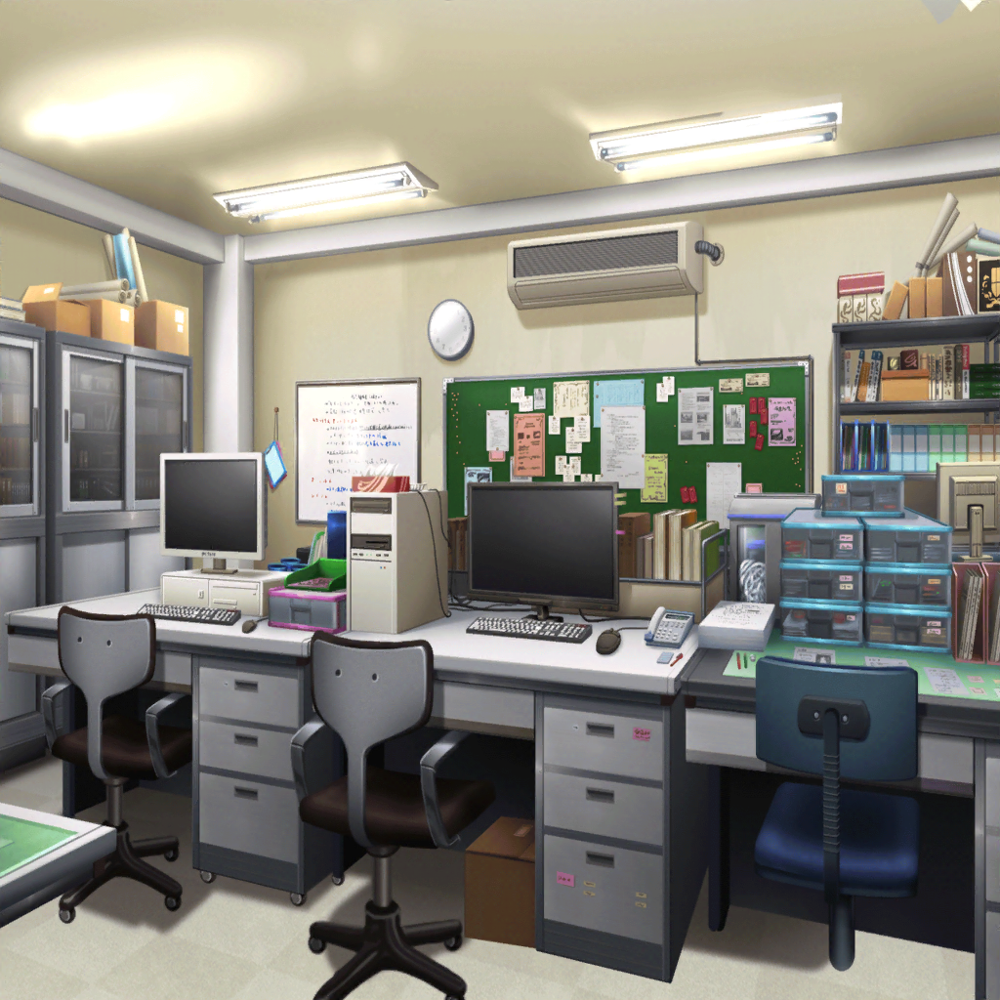

数日後
商店街
香澄
——はー。なんか緊張してきた。
うまく説得できるかなあ
りみ
だ、大丈夫。区役所の人だって、
きっと一生懸命お願いすればわかってくれるよ
有咲
どうだかな。お役所仕事の権化みたいなやつだ。
お祭りに来てくれ、なんて頼んでも、
「勤務時間外ですぅ～」としか言わないかもしれないぞ
香澄
そのときは……
りみ
そのときは？
香澄
もっと頑張ってお願いする！
有咲
力押しかよ。
もっとなんか、あるだろ。押してダメなら引くとか
たえ
そのほうが香澄らしい
香澄
うん！ 押してだめなら、もっと押す！
有咲
……はあ。ま、確かに慣れない頭使うよりはいいかもな。
こそこそ手回すのはあっちの得意分野っぽいし
香澄
よーし、行こう！
ごめんくださーい！
たえ
たのもう
りみ
ど、どっちも違うような……？

商店街 組合事務所
香澄
すいませーん。
区役所の人……じゃなくて、えっと……
沙綾
地域活動係の係長さん、来てますか？
商店街のおじさん
おお。元気のいい声がすると思ったら、君たちかい。
係長さんだったら、奥で相談してるよ。
祭りが成功すれば、来年の予算、考えてくれるそうだ
たえ
そうなんですか。ありがとうございますっ
商店街のおじさん
……と。噂をすれば、だな……
区役所職員
おや……またあなたたちですか。
今日は何のご用です。
あまり部外者に居つかれても困るのですが
有咲
（自分だって、商店街の組員じゃないくせに）
香澄
あのっ！ お願いがあります！
区役所職員
何でしょう。
予算のお話でしたら、これ以上の譲歩はできかねますが
香澄
そうじゃなくてっ……お祭りの当日！
係長さんにも来てほしいんですっ！
区役所職員
なんだ、そんなことでしたか。
あいにくですが、駅ビルの件で詰めねばならないことが
残っていますので
沙綾
来てくれないんですか？
有咲
お祭りを続けるかどうか、あんたが決めるんでしょ。
そういうの、無責任じゃないですか？
区役所職員
来場者数や売り上げについては、後日、
詳細なデータを上げてもらうことになっています。
判断材料にはそれで充分でしょう
香澄
だめですっ！
区役所職員
……？
香澄
そういうんじゃ、ダメなんです。
自分の目で見てくれなきゃ、伝わらないから！
たえ
ライブと同じ。
その場の空気を肌で感じなくちゃ、わからないこともある
区役所職員
そうは言われましてもね……
こちらにも予定があるもので
区役所職員
それに、私は中立の立場から判断を下さねばなりません。
一歩引いた位置からものごとを見たほうが、
公正な判断ができるというものですよ
有咲
ああ言えばこう言う……
沙綾
どうする、香澄？
平行線っぽいけど
香澄
ん～……
区役所職員
そろそろ、よろしいですか。
今日中に片づけなければならない仕事が残っているものでして
商店街のおじさん
あの、係長さん。
そう言わずに、顔だけでも出してもらうわけにはいきませんかね
香澄
おじさん？
商店街のおじさん
この子たちは、本当に一生懸命、祭りのことを考えてくれてます。
私たちが、その熱意にあてられてしまうほどにね
商店街のおじさん
祭りの存続やなんかやらは別として、ですよ。
子供の本気に、大人が応えてあげなくてどうするんです
区役所職員
む……
りみ
……おっ、お願いします！
頑張りますからっ！
香澄
お願いしますっ！
区役所職員
……わかりました。
後で文句を言われるのも嫌ですからね。
顔くらいは出させていただきますよ
香澄
ホントですかっ！？
有咲
なんか他に言いかたないのかよ……
沙綾
まあまあ。いいじゃん、来てくれるっていうんだから
りみ
あっ、あの！ これ、プログラムですっ！
私たち、ライブやりますから……！
香澄
このお祭りのために、新曲も作ったんです！
絶対、聞きにきてください！
区役所職員
……。もう、よろしいですね。
それでは失礼させていただきます
有咲
ほんっと、感じ悪いヤツ
香澄
えっと、ありがとうございます、おじさんっ！
一緒にお願いしてくれて……
商店街のおじさん
自分たちにできることは、しておきたいと思っただけさ。
それより、新曲まで作ってくれたんだって？
よくそんな時間があったね
たえ
この前の土日に、合宿して。
みんなで頑張りました
香澄
すっごく、いい曲だから！
商店街の人たちみんなに、早く聞いてほしいですっ！
商店街のおじさん
ほう……それは楽しみだな。
私たちも負けないよう、祭りを盛り上げないとね
沙綾
準備、間に合いそうですか？
商店街のおじさん
うん。思った以上にみんなやる気になってくれてね。
出店の数も充分揃えられそうだよ。
飴細工屋も出るそうだ
香澄
えっ！ 飴細工屋さん！？
りみ
よかったね、香澄ちゃんっ！
香澄
うんっ。
やったーー！ ポピパのキャンディー、作れるーー！